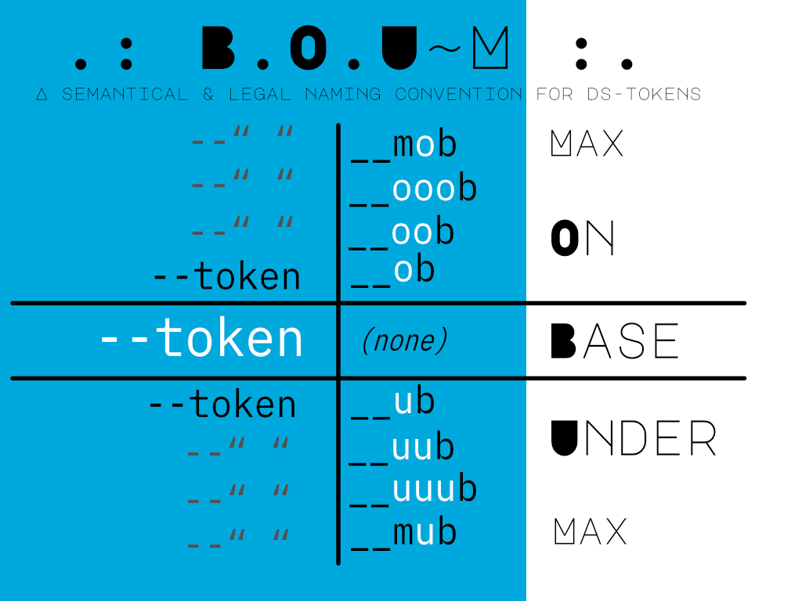

Hello and wellcome to the introduction of .: B.O.U.~M :. A fully semantical and copy-right protected naming convention designed to make naming tokens in design systems a breeze, and makes sharing work legally easier.
No docs, simple principles and a free, custom DS license agreement that handles redistribution of attached BOUM-tokens internally & externally. Like a block-chain without the crypto, just tokens.
.: B.O.U.~M :. is a simple acronym for:
As a narrative, you start choosing your token from the relative BASE. Then if you need more of a certain value, simply go one ON base. Need less? One under base.
And if you want to be certain to hit the highest value up or down, just MAX it out.
A dead-simple way to dial your token-value up or down using everyday layman's language; one more on, or one under. And your token's default BASE-token is no-token!
Because seriously, what does --color--600 actually say about how that color is used? It's just imaginary numbers represented on a scale of 100's. Is that the default choice for "the base color"?
BOUM-tokens use "imaginary semantics" that cascade nicely up and down from a relative BASE you already picked. A designed language.
And using some roman numerics to layer tokens (I, II, III), the design language stays fully semantical throughout code too. Github Co-Pilot loves it too, it just " read & writes " BOUM-tokens like it was pre-installed.
/* Nested Utility Colors, using the parent-name as selector. */
/* color primary, abbreviated to first-letters */
:root {
--cp__mob: var(--_cp__mob);
--cp__ooob: var(--_cp__ooob);
--cp__oob: var(--_cp__oob);
--cp__ob: var(--_cp__ob);
--cp: var(--_cp);
--cp__ub: var(--_cp__ub);
--cp__uub: var(--_cp__uub);
--cp__uuub: var(--_cp__uuub);
--cp__mub: var(--_cp__mub);
}
.class {
color: var(--cp__mob);
background-color: var(--cp__mub)
}
Having a seperation of concern in naming tokens, BOUM-tokens will never conflict with framework tokens like Tailwind. Using Revolver-DS; just lock, load and ship your BOUM-tokens in any DS, so pick one you like.
A win-win for devOps & desOps; a no-code design system for seperating devOps concerns in a desOps DS, and making it easier for all to play fair game to CRUD non-destructively.
But like any good old TellSell commercial: BUT WAIT, there's MORE!!
The name BOUM is four characters, and that's the max amount of characters you can use (excluding _modifiers) for writing out BOUM-tokens. But refactoring tokens is just as easy to do as creating them.
For some designers color is everything, for a dev it's clean code. Both are served in this example;
Suppose we created a color primary, with +8 variations, four dark and four light. And we need to add a lighter color, but can't use more o's. How to do that?
/* color primary, abbreviated to first-letters */
:root {
--cp__mob: var(--_cp__mob);
/* new color goes HERE */
--cp__ooob: var(--_cp__ooob);
--cp__oob: var(--_cp__oob);
--cp__ob: var(--_cp__ob);
--cp: var(--_cp);
--cp__ub: var(--_cp__ub);
--cp__uub: var(--_cp__uub);
--cp__uuub: var(--_cp__uuub);
--cp__mub: var(--_cp__mub);
}
A perfect example to show how to do it the quick and dirty way using modifiers, and the quick and easy way using numerical replacement.
Modifiers are a special case where you need to modify a color-name, and place it on the ramp. But the question is; which token does it attach too?
Luckily there is a simple rule for writing _modified tokens; it gets the name from the token that is closest to the base. Declared with an _m (and some << markers).
/* color primary, abbreviated to first-letters */
:root {
--cp__mob: var(--_cp__mob);
--cp__ooob_m: var(--_cp__ooob_m); /*<<*/
--cp__ooob: var(--_cp__ooob);
--cp__oob: var(--_cp__oob);
--cp__ob: var(--_cp__ob);
--cp: var(--_cp);
--cp__ub: var(--_cp__ub);
--cp__uub: var(--_cp__uub);
--cp__uuub: var(--_cp__uuub);
--cp__mub: var(--_cp__mub);
}
Done! That's quick and dirty in a clean way, but also very quick and dirty to "find and replace". It makes _modified tokens sooó easy to read and find, without needing any docs.
Now we get into the real deal; refactoring an entire code-base using BOUM-tokens. Or just an entire color-set, the process is the same; find & replace!
Dead-simple; you just hit CTRL+F and search for "ob", "oob", "oob" and replace them with numbers at the end; ob1, ob2, ob3. Numbers are not a crime, but using them for imaginary nonsense is.
/* color primary, abbreviated to first-letters */
/* before refactoring
:root {
--cp__mob: var(--_cp__mob);
--cp__ooob_m: var(--_cp__ooob_m);
--cp__ooob: var(--_cp__ooob);
--cp__oob: var(--_cp__oob);
--cp__ob: var(--_cp__ob);
--cp: var(--_cp);
--cp__ub: var(--_cp__ub);
--cp__uub: var(--_cp__uub);
--cp__uuub: var(--_cp__uuub);
--cp__mub: var(--_cp__mub);
}
/* after adding & refactoring */
:root {
--cp__mob: var(--_cp__mob);
--cp__ob5: var(--_cp__ob5);
--cp__ob4: var(--_cp__ooob_m);
--cp__ob3: var(--_cp__ooob);
--cp__ob2: var(--_cp__oob);
--cp__ob1: var(--_cp__ob);
--cp: var(--_cp);
--cp__ub1: var(--_cp__ub);
--cp__ub2: var(--_cp__uub);
--cp__ub3: var(--_cp__uuub);
--cp__ub4: var(--_cp__ub4);
--cp__mub: var(--_cp__mub);
}
I personally like to keep the MAX on and under the base, for ease of access. You could easily just count on too at the end, but the relative MAX is lost. MAX and the BASE are the only tokens that never need refactoring, any new color would simply replace it and degrade the old;
Now that we have refactored everything but the MAX and the BASE to numbers, how would you modify tokens that go over the top or bottom?
Dead-simple again too; MAX is semantical and ob* is numerical, which simple means; just give the old max a number, and the new value the MAX value.
/* add color on top of MAX on base */
:root {
--cp__mob_m: var(--_cp__mob_m); /*<<*/
--cp__mob: var(--_cp__mob); /*OLD MAX*/
--cp__ob4: var(--_cp__ooob_m);
--cp__ob3: var(--_cp__ooob);
--cp__ob2: var(--_cp__oob);
--cp__ob1: var(--_cp__ob);
--cp: var(--_cp);
}
/* after refactoring NEW & OLD MAX*/
:root {
--cp__mob: var(--_cp__mob_m); /*NEW MAX*/
--cp__ob5: var(--_cp__mob); /*UPGRADED*/
--cp__ob4: var(--_cp__ooob_m);
--cp__ob3: var(--_cp__ooob);
--cp__ob2: var(--_cp__oob);
--cp__ob1: var(--_cp__ob);
--cp: var(--_cp);
}
Numerical notation is a way of making sure that the semantics of going up or down the ladder stay in place. This hybrid way keeps their relative & semantical BASE, MIN & MAX, without creating an imaginary numeric scale to replace those too.
Just an obvious evolution, like how the roman numerical system was replaced due to too many characters needed to display. At some point it's time to replace characters with numbers.
For BOUM-tokens the rule is simple; After four; NO more semantics. Just gracefully let the o's and u's decay, and get progressively enhanced with good-old numbers!
But like a REALLY good TellSell commercial for an indie design system: There's even MORE!
Every good system has an anti-pattern, and BOUM's anti-pattern is to make design tokens fully semantical without the need for numerics, untill.
Yet every modern design system uses tokens like "sm", "md", "lg" "xlg", "2xl" etc. for sizes. They start ADDING numbers to semantics because they want "less characters". An anti-pattern.
TT-shirt sizes are a fully semantical evolution of ordinairy t-shirt sizes with numbers. The sizes simply trade place up or down the ladder, and "knit" semantics together like BOUM does.
--XX = smallest size (min)
--XS = extra small
--SS = small small (base small)
--SM = small medium
--MM = medium medium(base medium)
--ML = medium large
--LL = large large (base large)
--LD = large display
--DD = display display (max)
The pattern is quite simple and consistent with the rest, but why would you replace your t-shirt sizes with TT-shirt sizes?
Well if you are interested in fluid design, like Utopia's fluid typescales, it makes it easy to create pairs that you can remember. And they make your code smaller too.
Second, just like BOUM-tokens, TT-shirt tokens have a simple pattern to them so they are easy to predict, and never conflict with numerics.
Just Keep The Basics Fresh! #KTBF
.: B.O.U.~M :. tokensets are copyright protected in addition to the Creative Commons 4.0 CC-BA-NC-SA license agreement that protects creatives in the field of digital. A copy can be found here: https://followgu.us/license
The license is simple; BOUM-tokens are tokens that are attached at the end of your design tokens. These BOUM-tokens are copyright protected so your design system's tokens created from it automatically get legal protection, because the BOUM-tokens you use are protected by the license agreement that you have.
You in turn have a proof of license or not, which is free to get from the BOUM-shop https://followgu.us/boumshop. A smart contract between Revolver-DS and any other product I make with it, so I make sure it doesn't get used for NFT's, crypto-currency or SaaS-related products.
I like this planet very much, and crypto makes people so corrupted. I'm keeping it web 2.5 and say no to web3's mallpractices. Something no other license agreement even dares to consider.
But if you're using it for education or a CodePen, it's totally not neccesary to get a license unless you intend to publish the entire design token convention.
Accreditation (https://justgu.us) with a notification of the license (https://followgu.us/boum) is enough if you don't need to be licensed, but still want to do the right thing.
Any Questions? Just ask Gu.us or follow Gu.us to see where I hang out on digital social. If you wish to support the development of anything I make for free, feel free to have a look at my personal 🛒 SHOP for rad designer merchandise!
I love branding, naming things and design systems so much, that I started giving an "guns blazing" applied game design workshop called"LockOUT".
For those that want to learn the true art of design systems ; designing a DS pattern language by hand, no code, playing a serious & applied game I made to name things. ONSITE at your company or online if you need to!